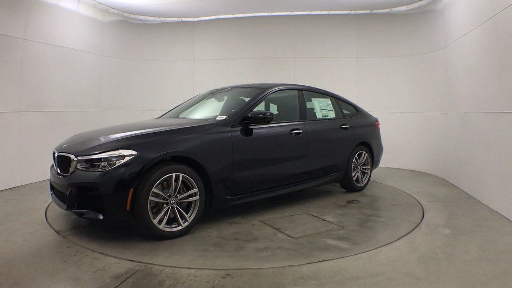

It’s hard to classify the 2018 BMW 640i xDrive Gran Turismo. It’s certainly not your typical sedan or hatchback. Now, don’t confuse it with the 6 Series Gran Coupe either. But, if one remembers the 5 Series GT from 2010, then think of this 640i GT as its replacement. It is also the closest thing to a 5 series station wagon that we’re likely to get here in America.

The 640i GT is still a far cry from beautiful, but the design appears much more cohesive than the 5 Series GT. The rear remains tall, but in profile it now looks more like a traditional 5-door hatchback, and less like a truncated wagon.
The aggressive nose, and lots of taut body lines, are all BMW hallmarks, and the brand continues to have some of the coolest headlights out there. The interior design is similar to the 5 Series and just about every other BMW for that matter. There are high quality materials, large dash-top mounted infotainment screen, iDrive controller, electronic shifter, shift paddles on the wheel, rudimentary manual controls, and great looking wood trim. Of course, available niceties include a head-up display, soft close doors, 3D surround view, heated seats and steering wheel, panoramic moonroof, and even remote control parking.
Much like the 5 Series, this 640i GT has the perfect balance of luxury and sportiness. Want to relax and cruise on the highway? It does that with true tranquility and silkiness. Want to whip it around your favorite back road? No problems there either. This car stays very flat and responds immediately to every input. But, with over 4000 lbs. of heft, as the highway turns into sweepers, you will wish for more feedback from the steering. Yet, grip remained fantastic regardless of the venue.
Power pours on strong, with a healthy bellow from the exhaust. Making all of this happen, is BMW’s 3.0-liter inline-6 turbo engine rated at 335-horsepower. All-wheel drive is standard.
For all of our detailed impressions of the 2018 BMW 640i xDrive Gran Tusismo, be sure to catch MotorWeek episode #3750 that begins airing August 17, 2018. For a listing of the public television stations that broadcast MotorWeek, go to motorweek.org and click the “About The Show” tab at the top. MotorWeek is also seen Tuesday evenings on the Velocity cable network.
If you were looking for a very luxurious ride with plenty of comfort and performance, there were already plenty of BMWs to choose from. Now you can add one more to the list, the 2018 BMW 640i xDrive Gran Turismo. It is the best of BMW sedans, SUVs, and hatchbacks, all rolled into one.
We take our Road Test review one step further with our Comparison Tests. We take two or more vehicles from the same segment and do a side-by-side comparison based on performance, price, fuel economy, safety and other features. Comparison Tests give consumers a better idea of how the competition stacks up. Click on our most recent Comparison Tests, or search by keyword above! .